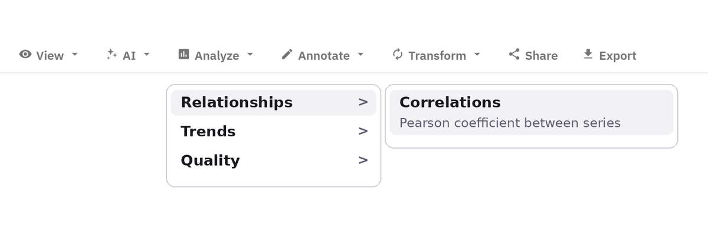
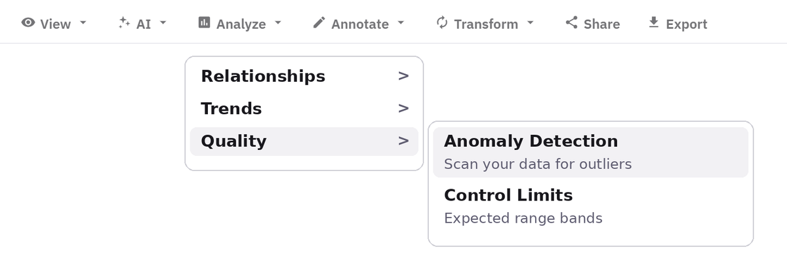
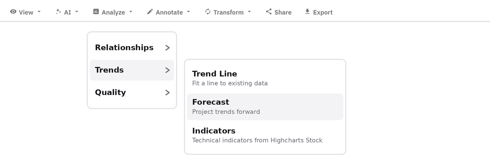
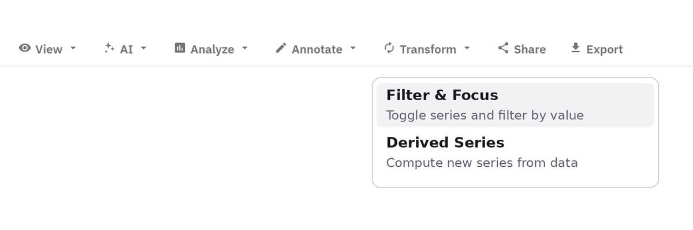
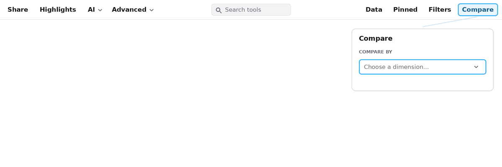
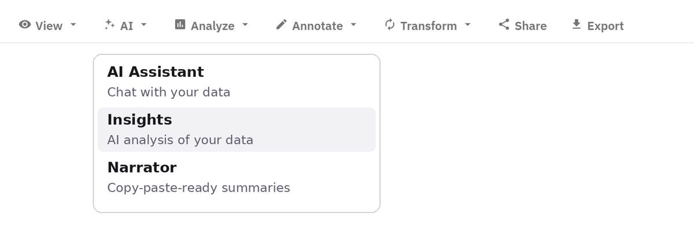

On both sides of the Atlantic, the hottest hour of the summer is now the hour the grid
works hardest. Houston heat pushed Texas to an all-time demand record in July; Paris heat lifted
French demand almost as reliably. The twist is the price: in France it did not follow the
temperature at all. Every series on this page is fetched live from open APIs when you open it.
Use the Orbit toolbar on each chart, and the page bar at the top, to test each claim yourself.
The Orbit toolbar did not load. Serve this page from a domain
on the Orbit installation's referrer allowlist; opened from a local file the charts
degrade silently to plain Highcharts.
How to use Orbit on this demo
Step 1 of 6
Correlations
Run it on the Texas chart, then on the France chart: temperature and demand move together strongly in both. Then run it on the France price chart and the link is gone.
How: Open Analyze in the chart toolbar, then Relationships, and run Correlations.

Step 2 of 6
Anomaly detection
On the Texas chart the record afternoons of 21 and 22 July stand out without anyone marking them. On the France price chart it is the evening spikes.
How: Open Analyze in the chart toolbar, then Quality, and run Anomaly detection.

Step 3 of 6
Trend line
Fit a line to each scatter. Texas and France both slope upward with temperature; the France price scatter is flat, whatever the temperature.
How: Open Analyze in the chart toolbar, then Trends, and choose Trend Line.

Step 4 of 6
Derived series
On the forecast chart, compute actual minus day-ahead forecast. The biggest misses fall on the hottest afternoons.
How: Open Transform in the chart toolbar, then Derived Series, and subtract the forecast from the actual.

Step 5 of 6
Filters and Compare
Filter the page to the record week and every time-based chart follows, the heatmap included; the scatters keep their full clouds. Compare puts a hot week and a cool week side by side.
How: Open Filters or Compare in the top bar; the date presets and ranges apply to the whole page.

Step 6 of 6
Insights and Narrator
Ask Insights on any chart: the context behind it carries the record date, the sources and the numbers on this page. Narrator turns it into copy in four tones.
How: Open AI in the chart toolbar and choose Insights, or Narrator.

Texas: extra demand per degree
…
Fetching EIA and Open-Meteo data
France: extra demand per degree
…
Fetching Energy-Charts data
ERCOT peak demand in this window
…
Fetching EIA data
France: price vs temperature
…
Pearson r, hourly
What happened: On 22 July 2026 ERCOT, the Texas grid operator, reported
an all-time demand record of 91,308 MW at 5 pm local time, beating a record set the day before. EIA's
hourly series shows 91,075 MWh for that hour. In Europe, successive heat waves in June and July pushed
Paris past 40 C and lifted French demand with it. But French prices did not track the heat: midday
solar absorbs the daytime peak, and the expensive hours come in the evening whatever the temperature.
This window starts 18 June 2026 and ends today.
1. Heat drives demand, on both continents
Fetching live data…
Fetching live data…
Fetching live data…
Fetching live data…
2. The record, and the forecast that missed it
Fetching live data…
3. The twist: in France, the price ignores the thermometer